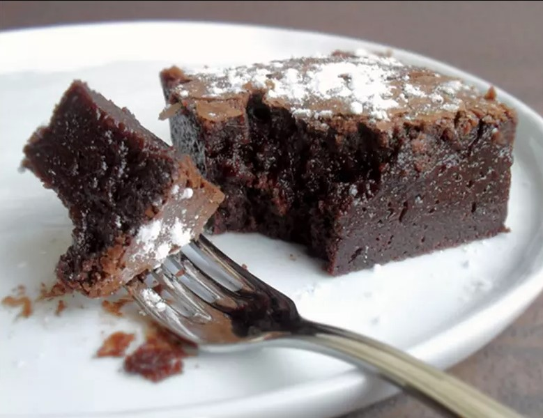

Dessert
Gâteau au chocolat
"Cette recette facile du gâteau au chocolat est un grand classique. Elle fera plaisir aux plus gourmands."

| Difficulté | Préparation | Cuisson | Temps total |
|---|---|---|---|
| Facile | 10 min | 20 min | 30 min |
Ingrédients
Chocolat noir : 200 g
Sucre : 100 g
Beurre : 100 g
Oeufs : 3
Farine : 50 g
Préparation
1 | Préchauffer le four à 180° (th. 6) |
2 | Faire fondre le chocolat avec le beurre |
3 | Mélanger le sucre, les oeufs et la farine |
4 | Mélanger le tout pour faire une pâte |
5 | Faire cuire au four environ 20 min |